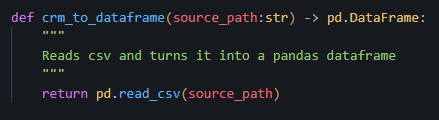
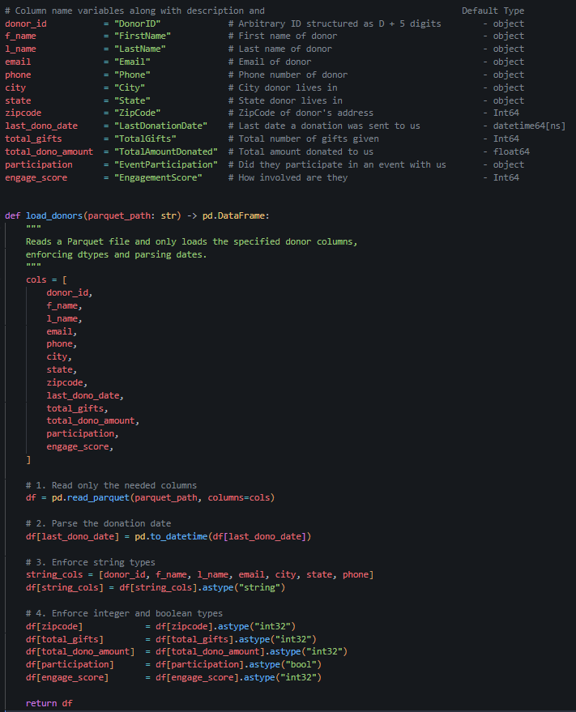

Project Start — Donor Relations Churn Rate
Machine learning (ML) projects come in many shapes and sizes. With limited experience in software engineering, I sought to find a project to rigorously challenge myself and learn more about real-world applications of machine learning. I've decided on creating a donor-churn rate analysis platform based on a Customer Relations Management dataset found on Kaggle. Today I accomplished a couple of things:
- Defined a minimal CI/CD workflow
- Sourced data from Kaggle
- Ingested and validated said data with pandas
- Planned feature engineering for donor churn analysis
Why such an ambitious project?
My goals for picking such a complex project revolve around my desire to learn about how real-world applications are deployed and to gain experience with the unspoken hurdles of software development. Four things I hope to learn more about with this project are:
- Containers & consistency: packaging models in Docker
- APIs & routing: serving predictions via FastAPI/Flask or tools like BentoML
- Reliability: load testing, monitoring, and circuit breakers
- Versioning: tracking data, code, and models with MLflow or DVC
Another example of a complex machine learning project is a content‑recommendation engine. It could entail producing a model that releases nightly batch updates plus a low‑latency real‑time API. Accessory dashboards (Grafana) and rollback strategies are additional side projects included within such a project.
Minimal CI/CD: Avoiding Over‑Engineering
I initially aimed for a full GitHub Actions matrix covering Docker build, push, and multi‑platform testing. Quickly, I realized it was slowing me down. Instead, I settled on an ultra‑minimal pipeline of testing each build on main. This keeps feedback fast and lets me focus on developing the model instead of chasing CI/CD bugs. Once I have data pipelining fully complete and feature engineering plans in place, I plan to reimplement the CI/CD workflows I previously dropped. Currently, they serve little benefit besides stopping me from running the test I really need to see results in.
Finding & Understanding the Data
I chose the Kaggle CRM donor dataset by gaurobsaha as my starting point. It’s clean and complete, perfect for prototyping. But real‑life data often looks nothing like this:
- Missing values in key fields (e.g., no email or last‑donation date)
- Inconsistent formatting, like phone numbers with extensions
- Partial histories: donors who gave ages ago but never again
Handling these imperfections requires extra steps: imputation, record filtering, and validation. Hopefully, when I become more experienced with data-engineering tools, I'll build another project to handle data gathered in real-time.
Of note, these data are simulated. This picture is not of real personal information.
Ingesting & Validating with pandas
To turn the raw CSV into reliable sources of data, I:
- Loaded it via pd.read_csv()
- Validated against a JSON schema (auto‑generated from the initial table) to ensure all columns exist and types match
- Snapped it to Parquet for downstream use 
This pipeline guarantees that every downstream process sees the same clean snapshot.
The pandas DataFrame is a two-dimensional, size-mutable, and table like data structure in Python. It allows you to load data from CSV, Excel, SQL databases, and more into a structured format with labeled axes. With built-in methods for indexing, slicing, grouping, and pivoting, you can easily clean, transform, and aggregate large datasets. Pandas also offers functions for handling of missing values, time-series functionality, and vectorized operations for fast, efficient data analysis. The backend leverages low level librarys to skip out on python's Global Interpreter Lock and reach C-like speeds.
Memory Savings: Python Objects vs. pandas Arrays
| Type | Python Objects | pandas Array Storage | Per-Element Saving | Total Saving (5 000 rows) |
|---|---|---|---|---|
String (e.g. DonorID) |
~50 bytes overhead + per-char storage | 8 bytes pointer + per-char | ~42 bytes | 6 cols × 5 000 × 42 B ≈ 1.26 MB |
| Bool | ~28 bytes per bool |
1 byte per element | ~27 bytes | 1 col × 5 000 × 27 B ≈ 0.13 MB |
| Total | ≈ 1.4 MB saved | |||
By switching Python str and bool objects into pandas’ homogeneous
arrays, you free on the order of 1–2 MB of RAM for just 5 000 rows—and
those savings grow linearly with more data.
At this small scale, 1–2 MB is negligible compared to the hundreds of megabytes (or more) consumed by model tensors and frameworks. However, the way data is packed has far-reaching implications:
- Linear scaling: 1 000× more rows → ~1–2 GB saved, which is material when handling millions of records.
- Performance gains: Contiguous, fixed-typed buffers enable vectorized operations and better cache utilization—vastly outperforming Python-object loops.
- Reduced interpreter overhead: Fewer Python objects lightens the garbage collector’s workload.
For tech giants like Google or Meta, serving billions of users, efficient data packing would lead to terabytes of savings.
Planning Feature Engineering
With clean data in hand, the next step is deriving signals that predict donor churn:
- Recency/Frequency/Monetary (RFM) scores
- Engagement ratios, e.g. engagement_score * total_gifts
I’ll explore these more in my next post when I get to feature engineering— including how to evaluate model performance (precision/recall vs. business KPIs) and optimize for both accuracy and latency when serving predictions.
Next Steps & Takeaways
- Research feature engineering practices
- Decide the best features for my model to train to optimize for
- Build the first model baseline with logistic regression or a shallow gradient boosting machine
Stay tuned for Part 2, where I dive into feature implementation and end‑to‑end model evaluation!
Published on June 22, 2025 — Paris Zhou